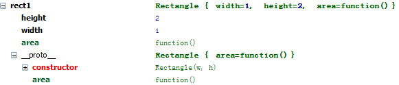

prototype原型链
_proto 和 prototype 的区别
原型(prototype)
原型就是对象的构造函数所定义的属性和方法。
一个对象的原型对象就是他的构造函数的prototype的值
当构造函数被定义时，prototype属性会自动创建和初始化
构造函数(function) consrtuctor的原型(prototype)属性(property)
原型是一个对象，其他对象可以通过它实现属性继承。
任何一个对象都可以成为原型
所有的对象在默认的情况下都有一个原型，因为原型本身也是对象，所以每个原型自身又有一个原型(只有一种例外，默认的对象原型在原型链的顶端。更多关于原型链的将在后面介绍)
在javascript中，一个对象就是任何无序键值对的集合 {name:'Ni',max:1,min:0},如果他不是一个主数据类型(string,null,number,undefined,boolean)
一个对象的真正原型是被对象内部的 prototype 属性 property所持有，
var a ={};
Object.getPrototype(a); //Ie 不支持
a.__proto__; //Ie 不支持
a.constructor.prototype; //所有浏览器支持
prototype(原型)
constructor >prototype>propety
constructor构造函数的一个属性
这个属性包含一个对象，所有实例对象需要共享的属性和方法，都放在这个对象里面。
不需要共享的属性和方法就放在构造函数里面。
实例对象一旦创建，将自动引用prototype对象的属性和方法。
也就是说，实例对象的属性和方法，分成两种，一种是本地的，另一种是引用的。
例子： Dog.prototype={max:20,min:10}; //这个要在实例生成前出现
Dog.prototype.name='Wangcai'; //这个可以在实例生成后修改
用来从原型对象生成一个实例对象。
构造函数中的this关键字，它就代表了新创建的实例对象。
用构造函数生成实例对象，有一个缺点，那就是无法共享属性和方法。
例如生成两个dog实例：var dogA=new Dog(): var dogB=new Dog(): 两个的name属性是独立的， dogA.name=222;修改之后，不会影响dogB.name=111;
每一个实例对象，都有自己的属性和方法的副本。这不仅无法做到数据共享，也是极大的资源浪费。
var Dog = function (){var name=11;} OR function Dog(){var name=11;}
var dogA = new Dog();
原型对象的感性认识
Javascript并不真正支持类概念（Javascript 2.0计划引入真正的类），它使用原型模型/对象来实现面向对象所需的继承等特性。
定义一个矩形构造函数 Rectangle() ：
function Rectangle(w, h) {
this.width = w;
this.height = h;
}
给 Rectangle() 添加一个属性，该属性指向一个面积计算函数，用以计算矩形的面积：
function Rectangle(w, h) {
this.width = w;
this.height = h;
this.area = function() { return this.width * this.height; }
}
定义Rectangle类的两个对象：
var rect1 = new Rectangle(1,2);
var rect2 = new Rectangle(3,4);
调试发现，rect1和rect2对象都包含 area() 函数，可以通过 for/in 来测试：
function to_str(obj) {
var os = "";
for(var pro in obj) {
os += pro + " , ";
}
document.write(os + "<br/>");
}
to_str(rect1); // width , height , area ,
to_str(rect2); // width , height , area ,
再用 Object.hasOwnProperty() 来测试：
rect1.hasOwnProperty("area"); // true
rect2.hasOwnProperty("area"); // true
在C++中，类的对象并不拥有方法（成员函数）。为了使 Rectangle 类的对象，都共享 area() 方法，可以把 area() 从 Rectangle() 构造函数中抽取出来，放在 原型对象 中：
Rectangle.prototype.area = function() { return this.width * this.height; }
再次用 Object.hasOwnProperty() 测试：
rect1.hasOwnProperty("area"); // false
rect2.hasOwnProperty("area"); // false
这里可见，rect1和rect2对象中，已经没有 area 属性了，area 属性现在在 Rectangle 的 原型对象 中。
原型对象的定义
那么， 原型对象 究竟是什么？它大致可以这么定义：
一个对象的原型对象是它的构造函数的prototype属性的值，当构造函数被定义时，prototype属性自动创建和初始化。
prototype属性的初始值是一个名为constructor的对象，指向与原型相关联的构造函数。
为了更好的理解这个概念，试看Firefox调试时的一个截图：

上图表明：rect1有以下几个属性：
- height, width属性，被rect1自身所拥有，用 hasOwnProperty() 测试返回为true
- area 属性，来自 原型对象 __proto__，该原型对象有两个属性：
- constructor 由Javascript引擎自动创建，并指向与原型关联的构造函数，即 Rectangle()
- area 属性，我们为 原型对象 添加的属性。
原型对象与继承
现在我们可以理解一个对象从他的原型对象中继承了一些属性，例如 rect1, rect2 从 Rectangle.prototype 中继承了area()属性。
继承属性的读、写是不对称的。读取一个对象的属性时，如果在对象自身找不到，就会递归式地向上搜索它的原型对象中的属性，如果到根节点还找不到，就会返回 undefined 。写一个对象的属性时，如果在对象自身找不到，就会创建一个属性。
先为 原型对象 添加一个color属性：
Rectangle.prototype.color = "black";
测试继承后的属性读写：
rect1.color; // read, black
rect1.border; // read, undefined
rect1.border = "solid"; // write, add new proto
rect1.border; // read, solid
rect2.border; // read, undefined
在rect1对象中添加了border属性，并不影响rect2，当rect2读取border属性时返回undefined。
读取属性的伪代码，可见是递归向上搜索的：
function getProperty(obj, pro) {
if(obj.hasOwnProperty(pro)) return obj[pro];
else if(obj.__proto__ != null) return getProperty(obj.__proto__, pro);
else return undefined;
}
真正的原型继承
Object.create = function(parent){
return {'__proto__':parent};
}
var Point ={
x:0,
y:0,
print:function(){ console.log(this.x,this.y);}
}
var p = Object.create(Point);
p.x=20;
p.y=30;
p.print(); // 20 30
标准性差：__proto__不是一个标准用法，
优化性差：不论是原生的，还是自定义的Object.create 其性能都没有，new的优化程度高
<!doctype html>
<html lang="en">
<head>
<meta charset="UTF-8">
<title>Document</title>
<script>
//构造函数Dog
var Dog = function (a,b,c){
this.name=a;
this.age=b;
this.color=c;
this.say=function(){console.log('Wang');}
};
//对构造函数Dog添加属性
//使用Dog创建一个实例化对象vivi
var vivi = new Dog('vivi',2,'black');
var nima = new Dog('nima',2,'black');
//查看Dog的构造函数
console.log(Dog.constructor); //function Function() { [native code]}
Dog.constructor == Function.constructor; //true
console.log(vivi.constructor); //实例vivi的构造函数 即 Dog function(){........ }
vivi.constructor == Dog; //true
Dog.prototype.max=111;
console.log(vivi.max);
console.log(nima.max);
//Dog是一个函数，查看Dog的原型
console.log(Dog.constructor.prototype);
console.log(Dog.__proto__);
</script>
</head>
<body>
<span>fcadasds</span>
</body>
</html>
Javascript原型
所有对象的__proto__都指向其构造器的prototype
所有构造器/函数的__proto__都指向Function.prototype，它是一个空函数（Empty function）
按照定义，每个javascript对象都有一个原型对象（简称原型），这个原型是由该对象的构造函数所定义（javascript自动创建的），并且对象继承原型的所有属性和方法（函数），比如 一个String对象 的原型为 String.prototype ，如果我们想要给String类添加方法，可以这样做（比如添加常用的trim()方法）：
js 代码
- String.prototype.trim = function (){
- return this.replace(/(^\s*)|(\s*$)/g, "");
- }
这将为所有String对象添加trim()方法！这个特性令人相当惊讶，因为这破坏了封装性，就好像在Java中你可以对String类直接进行修改一样。而且function() 可以当作数据来给左操作数赋值（而不仅仅是当作动作），也跟Java非常地不同。
对于Javascript内部类都可以这么改，对于自定义类当然可以这么改，如：
js 代码
- function Circle(x,y,r){
- this.x = x;
- this.y = y;
- this.r = r;
- //this.prototype = null ; /*这句代码可以看作是隐含存在的，因为javascript 中“类”的定义和函数的定义结构上没有差异，所以可以说，所有函数都隐藏有这样一个属性。*/
- }
然后，我们给原型加一个得到面积的方法：
- Circle.prototype.area = function(){
- return this.r * this.r * 3.14159 ;
- }
可以这样使用：
js 代码
- var circ = new Circle(0,0,2) ;
- alert(circ.area()) ;
当然，我们也可以在类中很轻松的定义我们想要实现的方法，如，还是上面那个求圆面积：
js 代码
- function Circle(x,y,r){
- this.x = x;
- this.y = y;
- this.r = r ;
- this.area = function (){
- return this.r * this.r * 3.14159 ;
- }
- }
- //调用:
- var circ = new Circle(0,0,2) ;
- alert(circ.area()) ;
两者的调用代码完全一样，那为什么要使用原型呢？我感觉主要是为了解决对内部类型的继承问题，也就是说当你无法修改String的构造函数而想要让所有String实例都具有某一方法的时候，你可以用这个prototype；或者说，你用这个prototype来模拟实现String类的子类，达到对父类进行扩展的目的。
JavaScript原型继承工作原理
JavaScript采用原型继承这事儿是众所皆知的，但由于它默认只提供了一个实现的实例，也就是 new 运算符，因此对于它的解释总是令人困惑。这篇文章旨在阐明什么是原型继承以及在JavaScript中究竟如何使用原型继承。
原型继承的定义
当你阅读关于JS原型继承的解释时，你时常会看到以下这段文字：
大多数JavaScript的实现用 __proto__ 属性来表示一个对象的原型链。在这篇文章里我们将看到 __proto__与 prototype 的区别何在。
注：__proto__ 是一个不应在你代码中出现的非正规的用法，这里仅仅用它来解释JavaScript原型继承的工作原理。
以下代码展示了JS引擎如何查找属性：
function getProperty(obj, prop) {
if (obj.hasOwnProperty(prop))
return obj[prop]
else if (obj.__proto__ !== null)
return getProperty(obj.__proto__, prop)
else
return undefined
}
让我们举一个常见的例子：二维点，拥有二维坐标 x y ，同似拥有一个 print 方法。
用之前我们说过的原型继承的定义，我们创建一个对象 Point ，拥有三个属性：x，y 和 print 。为了能创建一个新的二维点，我们需要创建一个新的对象，让他其中的 __proto__ 属性指向 Point ：
var Point = {
x: 0,
y: 0,
print: function () { console.log(this.x, this.y); }
};
var p = {x: 10, y: 20, __proto__: Point};
p.print(); // 10 20
JavaScript怪异的原型继承
令人困惑的是，每个教授原型继承的人都不会给出上面那样的代码，反而会给出下面这样的代码：
function Point(x, y) {
this.x = x;
this.y = y;
}
Point.prototype = {
print: function () { console.log(this.x, this.y); }
};
var p = new Point(10, 20);
p.print(); // 10 20
这和说好的不一样啊，这里 Point 变成了函数，然后还有个什么 prototype 的属性，而且有了 new 运算符。这他喵的是什么情况？
new 运算符是如何工作的
造物者
Brendan Eich 想让JS和传统的面向对象的编程语言差不太多，如Java和C++。在这些语言里，我们采用 new 运算符来给类实例化一个新的对象。所以他在JS里写了一个 new 运算符。
- C++里有用来初始化实例属性的构造函数概念，因此 new 运算符必须针对函数。
- 我们需要将对象的方法放到一个地方去，既然我们在用原型语言，我们就把它放到函数的原型属性中去。
new 运算符接受一个函数 F 及其参数：new F(arguments...)。这一过程分为三步：
- 创建类的实例。这步是把一个空的对象的 __proto__ 属性设置为 F.prototype 。
- 初始化实例。函数 F 被传入参数并调用，关键字 this 被设定为该实例。
- 返回实例。
现在我们知道了 new 是怎么工作的，我们可以用JS代码实现一下：
function New (f) {
var n = { '__proto__': f.prototype }; /*第一步*/
return function () {
f.apply(n, arguments); /*第二步*/
return n; /*第三步*/
};
}
一个小小的例子来看一下他的工作状况：
function Point(x, y) {
this.x = x;
this.y = y;
}
Point.prototype = {
print: function () { console.log(this.x, this.y); }
};
var p1 = new Point(10, 20);
p1.print(); // 10 20
console.log(p1 instanceof Point); // true
var p2 = New (Point)(10, 20);
p2.print(); // 10 20
console.log(p2 instanceof Point); // true
JavaScript中真正的原型继承
JS的
ECMA规范只允许我们采用 new 运算符来进行原型继承。但是大宗师 Douglas Crockford 却发现了一种可以利用 new 来实现真正的原型继承的方式！他写下了 Object.create 函数如下：
Object.create = function (parent) {
function F() {}
F.prototype = parent;
return new F();
};
这看起来蛮奇怪的，但却是相当的简洁：它创建了新的对象，并将其原型设置为你想设置的任意值。如果我们允许使用 __proto__ ，那我们也可以这样写：
Object.create = function (parent) {
return { '__proto__': parent };
};
下面这段代码就是让我们的 Point 采用真正的原型继承：
var Point = {
x: 0,
y: 0,
print: function () { console.log(this.x, this.y); }
};
var p = Object.create(Point);
p.x = 10;
p.y = 20;
p.print(); // 10 20
结论
我们已经了解了JS原型继承是什么，以及JS如何用特定的方式来实现之。然而使用真正的原型继承（如 Object.create 以及 __proto__）还是存在以下缺点：
- 标准性差：__proto__ 不是一个标准用法，甚至是一个不赞成使用的用法。同时原生态的 Object.create 和道爷写的原版也不尽相同。
- 优化性差： 不论是原生的还是自定义的 Object.create ，其性能都远没有 new 的优化程度高，前者要比后者慢高达10倍。